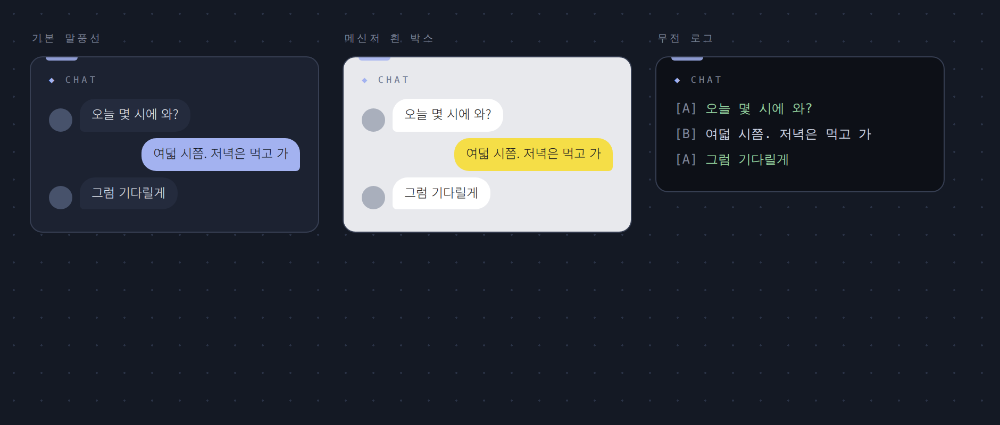
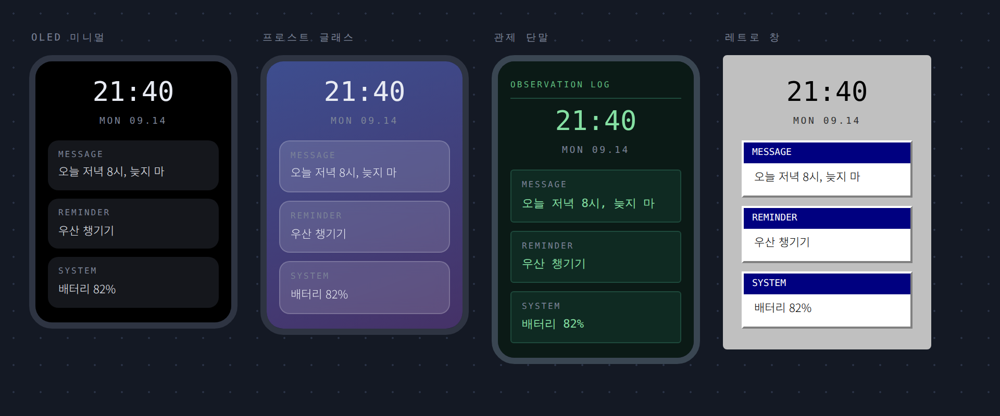
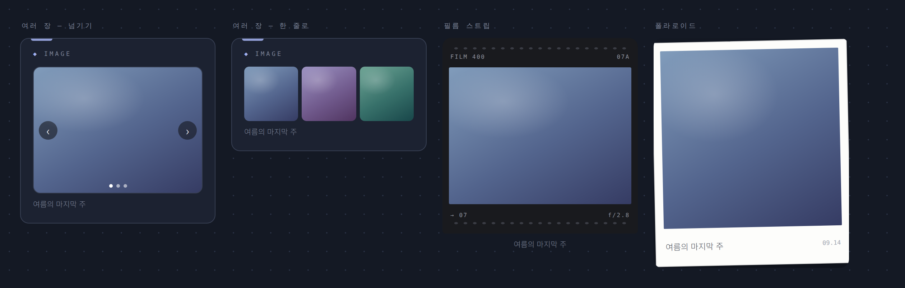
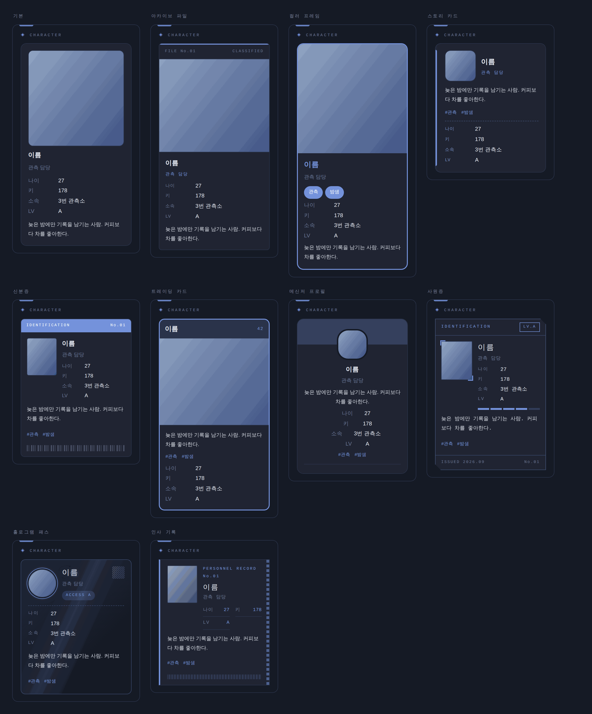
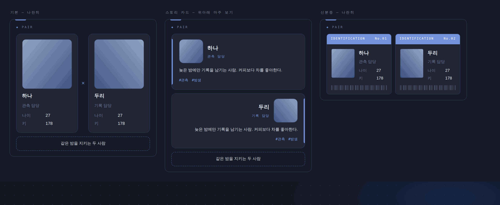

러브로그 · 위젯
전시·연출 위젯
채팅로그
좌우 대사 말풍선. 디자인 3종, 대사별 프사, 말풍선 색·글씨색·글꼴·크기 조절. ✨ 움짤 효과를 켜면 말풍선이 순서대로 떠오르고, ↻ 반복은 다 뜬 뒤 처음부터. 최대 높이(px)를 정하면 긴 채팅은 스크롤(사이드 360, 넓은 자리 440~480 적당 — 비우면 전체 표시).

사진 자리img/ll-w-chat.png단말기
핸드폰 잠금화면처럼 알림 배너가 쌓이는 위젯. 디자인 4종(OLED 미니멀·프로스트 글래스·관제 단말·레트로 창). 색은 직접 고르거나 「기본으로」를 누르면 홈 테마색, 케이싱은 메탈/단색. 높이를 비우면 알림 개수만큼, 정하면 고정+스크롤. 시계 온오프, ✕로 닫으면 📱 버튼으로 숨음.

사진 자리img/ll-w-phone.png이미지
- 사진과 제목(LOVE처럼 직접 입력), 눌렀을 때 이동할 주소, 아래 설명 한 줄.
- 여러 장 — ✎의 「+ 사진 추가」로 여러 장을 한 번에 올리면 썸네일 줄이 생기고 ↑↓✕로 순서·삭제. 2장 이상이면 「넘기기(‹ › · 점 · 스와이프)」 또는 「한 줄로(3장씩 옆으로 밀기)」를 고릅니다.
- 스킨 「필름 스트립」 — 어두운 띠 위에 스프로킷 구멍과 라벨(왼쪽·오른쪽 문구 자유). 「폴라로이드」 — 흰 여백 액자, 기울기는 반듯하게·왼쪽·오른쪽 중 선택. 둘 다 카드는 유지되고 🫧 투명을 켜면 액자만 남습니다.

사진 자리img/ll-w-image-multi.png☑ 투두리스트
디자인 4종(기본·메모지·모눈 노트·리본 편지지)에 제목 이모지·글꼴·색·부제까지 취향대로. 체크는 홈 화면에서 주인이 바로 누르면 저장되고 방문자는 보기만. 완료는 취소선, 아래에 진행 수(2 / 5).
페어 인터뷰
질문마다 두 인물이 답하는 위젯. 말풍선 / 문답 두 디자인, 인물별 이름·색·프로필 사진, 답을 비우면 그 사람 말풍선은 생략. 질문이 많으면 「처음 N개 + 더보기」로 접거나 ‹ ›로 한 개씩 넘겨 봅니다.
캐릭터 / 페어 프로필
스킨 10종(기본·아카이브 파일·컬러 프레임·스토리 카드·신분증·트레이딩 카드·메신저 프로필·사원증·홀로그램 패스·인사 기록)·템플릿 5종. 신분증·트레이딩 카드·메신저에서는 부제가 각각 직함·LV·상태메시지 자리에 들어갑니다. LV 항목에 S~D 등급을 적으면 사원증·홀로그램 패스에 등급 게이지가 붙습니다.

사진 자리img/ll-w-char.png페어 프로필은 두 인물을 나란히 두고 가운데 기호와 아래 관계 문구를 적을 수 있습니다. 스토리 카드 스킨에서는 위아래로 마주 보는 배치가 됩니다.

사진 자리img/ll-w-pair.png디데이 · 달력 · 해빗 트래커
- 디데이 — 기본은 첫날=1일(당일 D+1). 항목마다 당일=1일 / 당일=0일 선택. 스킨 빅 넘버·티켓·스트립·진행 바(지난 날짜면 다음 기념일까지 자동으로 차오르고, 미래 날짜는 〈시작일〉을 적으면 참).
- 달력 — 스킨 탁상·터미널·포스터·도트·티켓·스트립·일력. 날짜에 표시를 남길 수 있습니다.
- 해빗 트래커 — 날짜 기준 기록 위젯.
📰 매거진 표지
매거진형 구조에서만 있는 붙박이 위젯. 자리는 옮길 수 있고 ✎로 제목·투명을 바꾸지만 지울 수는 없습니다. 표지 1 + 카드 2에 올릴 글과 사진을 〈직접 고르기〉로 따로 정할 수 있습니다.